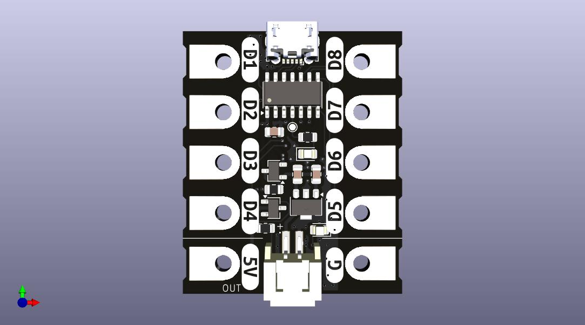

Biscuit MCU
BiscuitMCU (Biscuit Microcontroller) is a simple, beginner-friendly microcontroller designed to make learning and experimenting with electronics fun and accessible. Featuring alligator-clip terminals, it’s perfect for hobbyists, educators, and anyone new to microcontrollers. Please note Biscuit MCU is a trademark of Adam Kirby.
Features
- Beginner-Friendly Design: Alligator-clip terminals make connections easy.
- Battery Connector Included: Power the BiscuitMCU easily with the included battery connector. The board supports 7 to 12 volts DC (non-lithium) batteries, such as AA, AAA, or 9-volt batteries. This ensures safety for beginners, as lithium-based products are not used. Note: This board does not charge the batteries.
- Drag-and-Drop Programming: The built-in bootloader allows the BiscuitMCU to appear as a USB storage drive (U2F drive). Simply drag and drop your compiled code to program it.
- Arduino IDE Support: BiscuitMCU works seamlessly with the Arduino IDE, making programming straightforward and intuitive. (Library details will be provided soon.)
- Advanced Programming: For more experienced users, the BiscuitMCU supports uploading compiled hex files directly from the MPLAB IDE—a great way to learn commercial microcontroller programming.
- USB-IF Compliant: The BiscuitMCU complies with USB-IF standards, drawing a maximum of 450mA of current, which is plenty for a wide range of projects.
- Built-In Safety Features: Includes an auto-resettable fuse that protects against overcurrent, resetting within 24 hours for uninterrupted use.
- Expansion and Future Upgrades: The upcoming Add on board will add even more beginner-friendly functionality to the BiscuitMCU with a simple bolt-on design. This feature is currently in testing and will be released soon.
Programming
- Using Arduino IDE: BiscuitMCU supports programming via the popular Arduino IDE. Details about the BiscuitMCU Arduino library will be shared soon.
- Using MPLAB IDE: For advanced users, program the BiscuitMCU by uploading compiled hex files from the MPLAB IDE.
Certifications
- OSHWA Certification: BiscuitMCU has applied for Open Source Hardware Association (OSHWA) certification. (Details will be updated here when the certification is approved.)
- UKCA Certification: BiscuitMCU has completed full UK conformity assessment (UKCA) testing. Products for sale meet this high standard, ensuring exceptional safety and reliability for beginners.
Note: Certifications, such as OSHWA and UKCA, may become invalid or subject to change if the product is modified, or if you produce it yourself.
Buying BiscuitMCU
Support BiscuitMCU by purchasing it from our official online store:

Alternatively, you can visit: https://www.tindie.com/stores/adamkirby/
Distributor or Reseller Inquiries
If you're interested in becoming a distributor or reseller of BiscuitMCU, please email me at adam@adamkirby.online. Bulk or low pricing may be negotiated for qualified partners.
Contact
For questions, feedback, or inquiries, please contact:
Adam Kirby
adam@adamkirby.online
Purchase my products here: